<html><head><title>Pathology</title><style>body{font-family:sans-serif;padding:20px;background:#f4f4f9}.chapter{background:white;padding:20px;margin-bottom:30px}.q{border-bottom:1px solid #ddd;padding:15px}.correct{background:#d4edda}</style></head><body><h1>Pathology</h1><div class='chapter'><h2>Multiple Myeloma and Plasma Cell Disorders</h2><div class='q'><p><b>Q32:</b>  -  -          , ,        . — Å  ,             .        ‡‡%     ,    λ-  . ƒ  „Œ ‚   ‚. –-        ‚      -   .     ? Answer Key Question No. Correct Option 561 Detailed Explanations </p><div class=''>a)     </div><div class=''>b)     </div><div class=''>c)       </div><div class='correct'>d)      </div><p><i> ‰ ‚                 . „  ,     ...</i></p></div></div><div class='chapter'><h2>Alcoholic and Infectious Liver Disease</h2><div class='q'><p><b>Q31:</b>    ƒ  ' ?  „     : 917 Answer Key Question No. Correct Option 918 Detailed Explanations </p><div class=''>a) -‡, -”, -, è-Å</div><div class='correct'>b) -Å, -”, -, è-‡</div><div class=''>c) -”, -, -Å, è-‡</div><div class=''>d) -Å, -, -”, è-‡</div><p><i> α- ‚   (”’‹)     ƒ  ' . ‰      ‚  : •...</i></p></div></div><div class='chapter'><h2>The Breast</h2><div class='q'><p><b>Q25:</b>              Å  Å     ? Answer Key 32 Question No. Correct Option Detailed Explanations  ‚       † Å   ? 74  ‚               „       .            ? 94  ‚- -                     †,   ,      . Œ            .        Ž        ? Answer Key Question No. Correct Option 152 Detailed Explanations  ƒ è‰-Å-               . Ž            .  Å      Å çÅ  .            ?  “--     „            .         ƒ          ?  --       …  …       .       .     …   “. /ˆ        . ‚                   …  ? 381  ň--        …           . „ ƒ   ,       .                          .          ? 515  -  -          . — Å  ,       .       ‚ ‚  ‚  -    . ƒ                    .                     ?   --        ,               . ‚       . ”                               .         ?                 ? 699                             ? Answer Key Question No. Correct Option 722 Detailed Explanations                                     .           •       /         :  ’      ,                     ? 915                 ?   -         -         . •Š   ŠŽç ƒ‚      èê”  ‚.                  ? 1187 </p><br><br><div class=''>a) ‰ </div><div class=''>b) ‰ èê”  ‚</div><div class='correct'>c) Š ƒ‚ </div><div class=''>d) ˆ   </div><p><i> è             Å            .  ...</i></p></div><div class='q'><p><b>Q26:</b>                  Š      (ŒŽ…)? Answer Key Question No. Correct Option 75 Detailed Explanations          : Answer Key Question No. Correct Option 95 Detailed Explanations       Å              Å ?              ?  ‚   …               α-   ?         … ƒ    .         .        ?                    ? 559  ‘ š-   ˆ --      . Š      ,            .             ? 585  ‚                         ?   ‹- -          ,     ,     . ê     ,                  . „               .      •    ,              ? 886                …           ?               ? 1005  ‡--       -         ƒ                   . ■Š         .      „     ? </p><br><br><br><div class=''>a) †  </div><div class=''>b)   </div><div class='correct'>c) † </div><div class=''>d)      </div><p><i> Œ   Š      (ŒŽ…)    „„   . …  Å       ...</i></p></div><div class='q'><p><b>Q27:</b>             ƒ      †„-’?  “--          .          „        ? 243  --              …   . ’ •ˆ’     … … Å ‹    . ‚               ? 382  —                      . „ ,                  .              ? 516 Answer Key Question No. Correct Option Detailed Explanations          ‚ ,   ,      ‚  Å             .                  ?                                  ?      [ƒ ( )]  ?          -       ˜‡- -   ?  ’      .                : Answer Key Question No. Correct Option 1006 Detailed Explanations   --         ,         . Å ‚  ,  ,         . ˆ  ‚             .                  ? 1188 </p><br>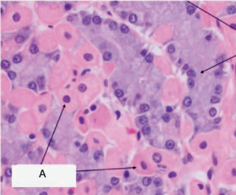<br><br><br><div class=''>a) ‰   </div><div class=''>b)         ‚    </div><div class=''>c)                </div><div class='correct'>d)             ‹</div><p><i>    - “        -  †„-’. - “   - ˆ   - ...</i></p></div><div class='q'><p><b>Q28:</b>  Ž Å           . 223 Answer Key Question No. Correct Option 224 Detailed Explanations  ÅŒ--           ƒ              . š         .         ƒ  ƒ          ?  Ž ™†               ,     … ç.          . ‚       ? Answer Key Question No. Correct Option 383 Detailed Explanations  -  -             .             ?  Œ         ,    ?  Å      : Answer Key Question No. Correct Option 700 Detailed Explanations   ‹- -             .                      ? Answer Key Question No. Correct Option 887 Detailed Explanations      ,   ,              .                  ?                ? </p><br><div class=''>a) ‰ </div><div class=''>b) ‰ </div><div class='correct'>c)  </div><div class=''>d) † </div><p><i> ƒ -† „ƒ-‘  ‡Å   ‡                  ...</i></p></div><div class='q'><p><b>Q29:</b>           ƒ       ? Answer Key Question No. Correct Option 244 Detailed Explanations                    ?                           ? 586 Answer Key Question No. Correct Option 587 Detailed Explanations  916                     -  ?  ç -         ƒ            ? 1189 </p><div class='correct'>a) ç    </div><div class=''>b) ˆ     </div><div class=''>c)    </div><div class=''>d)    </div><p><i> ‘è—-Œ (‘   -Œ)    ƒ        (—‰…). —‰…    ...</i></p></div><div class='q'><p><b>Q30:</b>  560             Å        ?  „              .  --             “     . Š    ‚                .      „     ? Answer Key Question No. Correct Option 1190 Detailed Explanations </p><br><div class='correct'>a)    </div><div class=''>b)    </div><div class=''>c) ˆ   </div><div class=''>d) ‰   </div><p><i> ŒÅ                  .           Å, ...</i></p></div></div><div class='chapter'><h2>Developmental disorders,infections and tumors o...</h2><div class='q'><p><b>Q24:</b>              ?                      ?  ‹                 ?               ?                   ‡   ƒ    ? 222  Ž˜--                ,              .                     ?  ‚           ?              -™ -   „ ? Answer Key Question No. Correct Option 418 Detailed Explanations           .   -   '             †?                         ?  •    è                .                  ? 584  ƒ--           •Š‡—è          ?                 ? 721  ‹             : Answer Key Question No. Correct Option 778 Detailed Explanations   - -                         .            ?   è--         Å         - .                   ?   ƒ‘-  -                 . †        --     š‡     Å””›  ÅŒ.          ?  •     ŠŽç  ‚            ,         .            ˜       -  ‹ ?  ‹Œ--             ƒ ,      .  ŽèÅ              .                   ? Answer Key Question No. Correct Option 1221 Detailed Explanations </p><br><br><br><br><div class=''>a) è   </div><div class='correct'>b) ‰    </div><div class=''>c)    </div><div class=''>d) Ž     </div><p><i> ‰             ,      Å             ...</i></p></div></div><div class='chapter'><h2>Skin pathology</h2><div class='q'><p><b>Q21:</b>            Å                   ? 11  „      –—- -  ,   - …     .              .            …   Å    ?  ç         „   „   ?             Å-     ?       Œ    —  . …               ,   ,     .         .         ?  - -            . ê    ,       †    . Š-         . ç         .          ? 150   ‘--             . ”           ,         .             . ”       ›        —.                         ? Answer Key Question No. Correct Option 184 Detailed Explanations                       ?  –--        ƒ     „    ƒ      .                ? 241   †š- ‚- Ń›- ‚  „  ‚    ‚  „    Ž „‚    . Œ ‚        ‚     , —  „  ‚      ‚‚         . ƒ   ‚    ‚  ‚‚ ,   ‚    ,   ‚   . Œ    ‚ ‚   .  ‚        ‚?  ê--      …   ç     . ‚               ?   —-„-                  ‚ˆ „ . †„        „          .       .         ê  „        ? 416                       ? 473 Answer Key Question No. Correct Option Detailed Explanations                  '   ?            ƒ-    -…    ?           ‚      ‚       .             ? a) b)                      ? 583   ‡ê--    ‚                    .                      ,               .                     .      ‚     ?           Œ          . Š‹   -          .                   ?             ?                   ?  Å       ‚           ?                '   ?            ?                            ? 914      †                  † .    Œ         ? Answer Key Question No. Correct Option 985 Detailed Explanations                  ?  •--       …–‰- ˜            •      .       Å         ? Answer Key Question No. Correct Option 1068 Detailed Explanations   -         . „            . ç        .             ? Answer Key Question No. Correct Option 1147 Detailed Explanations                         ?                                    -   .       .             ? 1219   ˜- -            Š           …   -     . †             .         ? 1265 </p><br><br><br>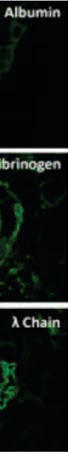<br>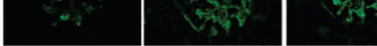<br><br><br><br>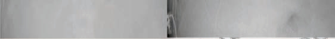<br><br><br>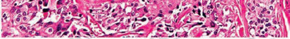<br><div class='correct'>a) „  </div><div class=''>b)     </div><div class=''>c) „   </div><div class=''>d) ’   </div><p><i>       Å   (     )  ƒ           .       ...</i></p></div><div class='q'><p><b>Q22:</b>      : Answer Key Question No. Correct Option 12 Detailed Explanations       Å …        ? 31 a)       ? 73                         ?    ‘-   ç --           -      .       .                   ? Answer Key Question No. Correct Option 127 Detailed Explanations          † †     ‘ -ˆ   ?                   ‡Å     ?  Å--       ,  ,   ,       . †     ,               Œ– /‹   Ž“%  .                    ?   ç† - ‚- Ń›-  „         .   ‚         ‚  „          „‚ ‚  .        ‚     ? 295 Answer Key Question No. Correct Option 296 Detailed Explanations               -    …   …     ? 380  ‹ „                   „  „  „ ?                        '   ? Answer Key 488 Question No. Correct Option Detailed Explanations  Žê--                .         .        .                ? 513               ? 558  Ž                   ?                        ’       ? Answer Key Question No. Correct Option 662 Detailed Explanations   ‰ˆ- -                  . Å           ”    †      “  .        '            .  ,                     ?                    .     ? 720   ˆ--           .          . ê               ,    ,        . ‰     ƒ       .      ? 776  Å                 ‚  ?   ‘--                        .       „  .           „     ? 861 Answer Key Question No. Correct Option Detailed Explanations 862                   ?                         ‡   ?                   ?                  ?  ŠŒ--      –-         ,         . ç-   …         ,        . Ž       .        ?  ƒ… ™ ’                     ? </p><br><br>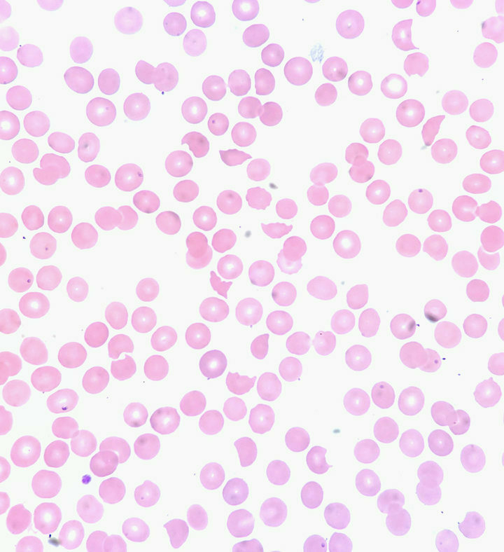<br><br><br><br><div class=''>a) ’     </div><div class='correct'>b) „ </div><div class=''>c) ‰    </div><div class=''>d) ƒ   </div><p><i>       Ž      .            Ž      Å     ...</i></p></div><div class='q'><p><b>Q23:</b>                Å   ƒ ?       ?  Š                     . ç             ? 93  ’       ‘ -ˆ       : 151  ƒ ™-Å-         ‡           ‡            .     Å    ç      Å   ’          ç    Å   .                   .    ç Å           ?              -   ? 242  ’        ,          —Å ?                 „ .               „  ? 417  Å‚--                     .           .                  ? 514  -  -          ,  ‚   ,    .  ‚  ‚  ,     ,       . –-         .                           ?               ?              †                .         .   †      ? 698           -         ________   ‡--                . ”    ,          . ‚                  ‘. ‰         .                   ? 777  Å           ‚         ‚               ? Answer Key Question No. Correct Option 825 Detailed Explanations              ‚        ? 885       ‡         ? b)   è„-  -               . ê   ,           ”‘„/. ‡    è-†‡ 1004     ‘Œ-     .             ?  --            ƒ ‘—ˆ    ‘ —‡ˆ‡.                ? 1186  –„-           ƒ . ŽèÅ             ê– . —      ,   -       ,        -           .         .       ? 1220   ç˜- -              .                  ? Answer Key 1266 Question No. Correct Option Detailed Explanations </p><br><br>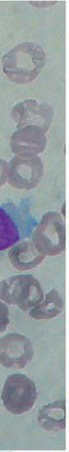<br><br><br><br><br><br><br><br><div class=''>a) ’     </div><div class='correct'>b) ƒ    </div><div class=''>c) ’   '   </div><div class=''>d) ‰     </div><p><i> ˆ     -               Å   ƒ .      Å...</i></p></div></div><div class='chapter'><h2>CNS Tumours</h2><div class='q'><p><b>Q17:</b>     -          –-  -          Å   ,            .           Ž     ?  29 “     ƒ       :         „ Š   ?  ‡       ,                 ?  Ž              ?  ‚‰- -     †     †          † †  . ‘    †          . ’                    ?                          ? 182  ˆ‰--                          ’ .                        ? 205               ?           ƒ                  ?         γ■‹-   :  Å      „ ‚  ‹ç      ‚ ‚       ‚ ?                   .      ,               -       . ‹        .            è        ?               ?  ’       …,   _________.   ˜‡-„-     ™Œ‹      ‹è. è        . Å          .              ?  „          &; Å‚%           ,    ,     . ˆ      ‡  Œ.                 ? Answer Key Question No. Correct Option Detailed Explanations 460             .  ƒ  ,        .               ? 472  …        -        ,                   ?              †       ?                        ? 556                 ƒ/ ‚ê     ? 582                  ? Answer Key Question No. Correct Option Detailed Explanations                    . …                   ? 629   “ç--       ,             .              . Œ        •    .              ?                      .      ? 678   ˆ”- -          . ç ,             . Å                  ?   ƒŠ- -             …   ,   ,          .           '    ?                      . ‚             . ‚              .     ? 774  ç          ?                            ?   —--                    .       „  .          -   ,               „            . ‰       ‘˜.           „    ? 859   Šç- -            . –                  .       çç /…      Œ‡ /….     ‚   ?                    Å         ? 913          .   š˜-„-      „        „.  † „      † .         † ? 983            :  •--      ,     ,        . Š                      .            .           ? 1065                 ?           Ž       ?  •             „         . • ƒ  „  ‚   Žç, ç,   ŠŽç .                   ? 1184               ?   •- -                        …  ,  ,   ,       .                Š        .           ?   è   ‚  ‚     Œ Å     … ,     ‚    ƒ     Å Å. Š         , ‚            ƒ Å      .            ?  ê      Å       ? Answer Key Question No. Correct Option 1309 Detailed Explanations           Å Å       ? </p><br><br><br><br><br><br><br>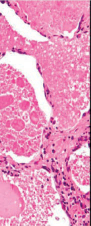<br><br>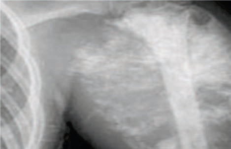<br><br>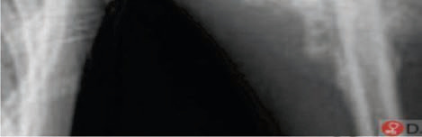<br>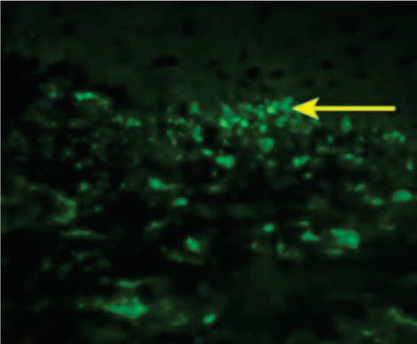<br><br><br><br><div class=''>a) ‚ </div><div class='correct'>b)  </div><div class=''>c)  </div><div class=''>d)    </div><p><i>   Å                      ,     Å      . ‰ ...</i></p></div><div class='q'><p><b>Q18:</b>                 ?                   Å  …                   ?  ”Š-   ‡          ? 72  ç           „  :  ‹   ,  …&;ƒ              .       Œ     ? 125  ’                      ? 149                        . ’ …  ,          .    …           . –      ‚è   –”è .                   ?                  ? Answer Key Question No. Correct Option Detailed Explanations 206             -  Å        ?  Ž˜--             . †    „  ,  ‰ˆ     . ‰               .               ? 240      :            ‚ ‚           Ń›  ? 294                       .     ,         ,   ,   .    ,                  .           .       ? 315              ?  Œ--       …  Š  ê  . ”    ,     .      …  . ‚     …       ? 379  415        „    -  „  ” _____  Š           ƒ   ?                  -      '   ?             …       ? 512                 ‚         ?                           ?                      ?   ”ç-                     .                     . ˆ   ,         .                  ?       ƒ      „    ƒ           ?         ?                 .              ? 719   ‡--             . ‰             . è              . Š                   .      ƒ  ?  „               ?       ‚           ‚           . ‹           ‚     ‚    . Å       ‚       ‚  ?   —‹--               „        . ç     , - …        .              .       .     …  …     ?                   ç  ?  ’       ˆÅ  ˆÅ ,       ’„  -ˆÅ      -ˆÅ  ?         ‚        ‚     ‚ .     ‚   ‚‚ ? 941           ?   èè-  -                  .                 ?  †’--                  ,   ,   . è   ç     †  . ‚      -      —-     .         ? 1066   Š”--               . ‹Å     „-  . ‡  ’      .                   ? 1092   Š--                     Ž                       . „     ‹      .      ? 1145  --            . •                  ƒ   .                ?                           Ž  ? 1218   ç‘- -    -       . ƒ        .        ______. 1263  ‹        : 1295 Answer Key Question No. Correct Option Detailed Explanations             ’•           ? </p><br><br><br><br><br>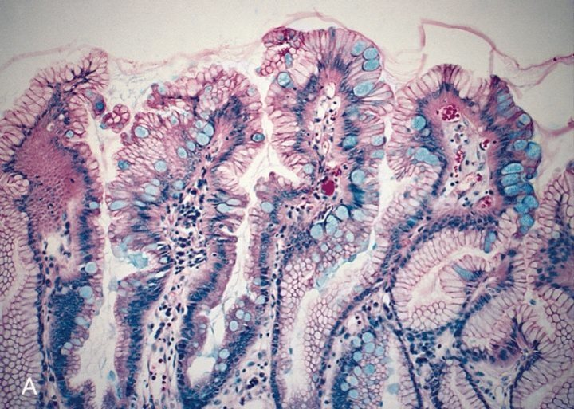<br><br><br><br><div class=''>a)    </div><div class=''>b)  </div><div class=''>c) „   </div><div class='correct'>d) ê</div><p><i>           ƒ    ,              ƒ ...</i></p></div><div class='q'><p><b>Q19:</b>  10                  -        Ž            ƒ   ,         .    :             Å   ? 30   –--     Å     -     „  Å  „   ‡. …  „              . …      Å   —          Å Å .     ‡ ?           ?                ?                 ?                 è   '  ? 183           - Å   ç  ?  ÅÅ--            ,  ,    ƒ ,      . ‹             Œ  /‹.                ?       ,    …“   ÅÅ?         ˆ   Ń›    ?           - -   ,                ?   —--            .                „   .            ‘.                 . †         ,   -     …   ‹ƒ  „  346  .        ?  ‚                   ?    -      „       ‹è.              ?  -                           ?   ‰‡- -          …… ()   '   .                    ? 487      -      '              .   ,          …    .           ?                - ‚,     ‚             ?   †--   ê                 . •    –         .               ?                .               -   Ž   . …            ?   ç--         ‚       ‚              . –             .          :                  ?            „       Ž? 697                     ?             '   ?            ê--      -   .                  . Š           ? 806  Å                ?                ? 860  ƒ          ,         ? 884           …        ˆÅ .                     ?                  ?                     ? 984                 …  ? 1003  Ž --      ,   ,    .    ‘      . Œ           .                ?  ‡     :                      ?  •                 ƒ  Žç   ŠŽç . ‘              ‚: 1185                ?                …        . Š              …: 1264   çŠ--            .           .    —     ? 1323 </p><br>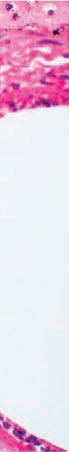<br>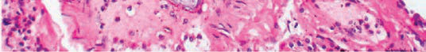<br><br><br><br>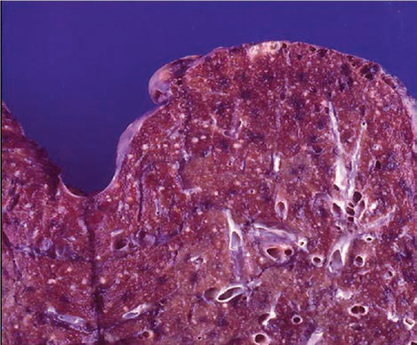<br>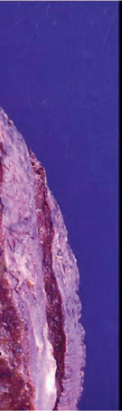<br><br><br><br><br><br>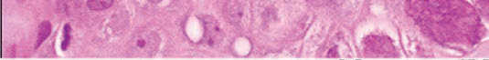<br><br><div class=''>a) ê</div><div class='correct'>b) •  </div><div class=''>c)  </div><div class=''>d) ƒ </div><p><i>         ƒ        . ‰       Å            ...</i></p></div><div class='q'><p><b>Q20:</b>            ‚     Å      ?        Å   ƒ  :    Å   —               . è            Å  ?  Š-      : 92  Å              ? 126                ‘ –ˆ   ?               '   ?     /     -             : 221               ƒ                ?             …“   ÅÅÅ   ? 262 Answer Key Question No. Correct Option Detailed Explanations   †- ‚- ,   Ń›-  „, ‚    ‚  ‰     .           ‚               ?  Œ        : Answer Key Question No. Correct Option 316 Detailed Explanations   ‡…--                  , ,    .                            .                    ? Answer Key Question No. Correct Option 347 Detailed Explanations                  . ‚                  ?                 ‹–è…‚‡  „?                ƒ              ?                     ?                   . ‰          •šö   . —        .          ?  -  -           ,   ˆ‰„,       .         Å   . –-     ‚  .                ? 557  ’“†         _____  …           “‘ê-Œ     ? Answer Key 630 Question No. Correct Option Detailed Explanations               '   ? 661             ? Answer Key Question No. Correct Option 679 Detailed Explanations       †             ? a) b)                         “„  ?   -       . è ƒ          ,     ? 775         ,       ? Answer Key Question No. Correct Option 807 Detailed Explanations  Å                   ? 824              ü     „   :  …      Œç- -                      -  .              ,   :   ’Ž          ˆÅ, ˆÅ,   -ˆÅ ’„.                       ?    ‚                   ? 942 Answer Key Question No. Correct Option Detailed Explanations           †    … †  „     .             ?   ƒ—-  -    -              .                         .                  :  ê’--          –                     .    Å                      . è    è–      .       —-    —-  †       .            —-  .                 ? 1067   ”ƒ--       ,   ,    . ‹     ‘    (… )   .             †  „         .            ? Answer Key Question No. Correct Option 1093 Detailed Explanations             -          ? 1146             ƒ Žç- ƒ   ŠŽç -  ƒ  ‚:                ?   ç˜- -                           . ƒ                       -       .       ?  •ƒ               ,  : Answer Key Question No. Correct Option 1324 Detailed Explanations </p><br>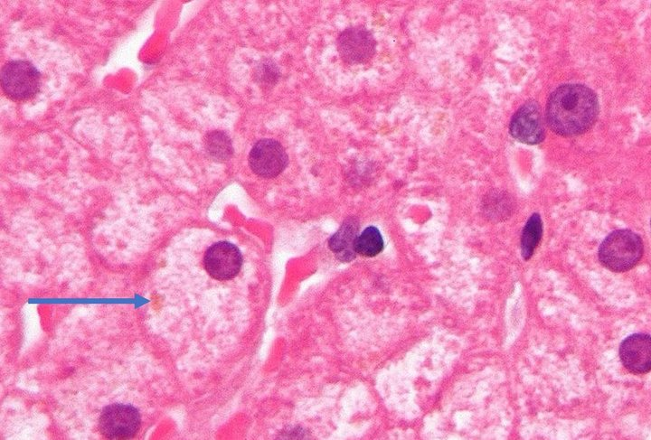<br><br><br>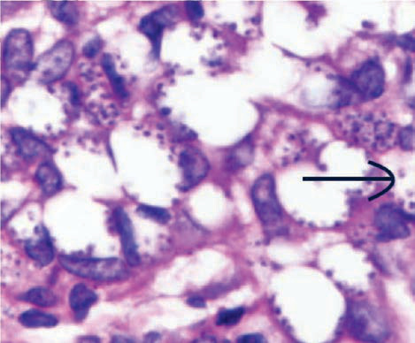<br>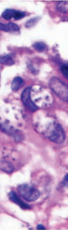<br><br><div class=''>a)    </div><div class=''>b)  </div><div class=''>c)     </div><div class='correct'>d)   </div><p><i> ‡      ‚     Å      . ‰           ,  ,    ...</i></p></div></div><div class='chapter'><h2>Peripheral nerves & Neuromuscular pathology</h2><div class='q'><p><b>Q1:</b>           ?             ?                  - -  .              ?           ?                     ?             ?            .              ?             -     ?             ?                ?                 ?                  ?                      -    ?                  ?   ,       ,      .        ,     ,      ,       .              ?  -                     ?              ?              ?   --              .               .        ?             .                  .                --                         .   ,          .       ,     ,        .             Å  . ‚                    ?                ?                -      ?                     .        -   ?             ?               '   ?                -           -          ?                     .          ?   --        , ,            .         .               .             ’   ?              ?   --            .                   .                      .        ?                       ?                    ?                   ?                 ?            ?                   ?              ?                  ?   --            .             .        /   °Å. ‚       ƒ     ?                           ?   --                            .               .                ?   --                .       -              .            .                  .          . Å   ‚  ?   --            ,      ,      .            .        ?   --              ,  ,      .              .      ?                       .                .     ?   --                 .           .              ?                '   ?                  ?                 ?            ?   --    -      .                   -              .              ?                      ?                    .                ?                    ?                  ?            ?   --            ,   ,   .              .        ?               ?   --                     .                .      ,            .  Å  ‚/ . ƒ                   ?                          ?                  ?   --                      .            .  -       .            . Å           ?                 .            .           .       ?             -                   ?               ’   ?                       ?             ? </p><br><br><br>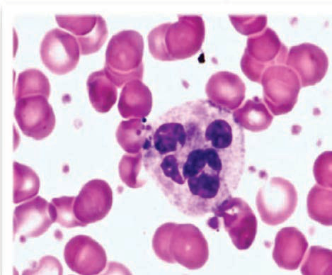<br><br><br><br><br><br><br><br><br><br><br><br><br><br><br>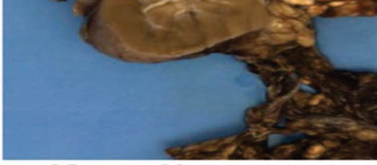<br><br><br><br><br><br><br><br><br><br><br>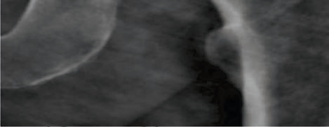<br><br><br>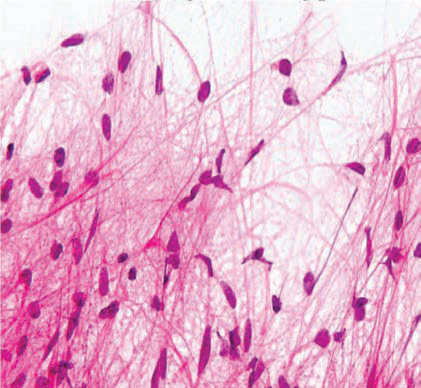<br><br>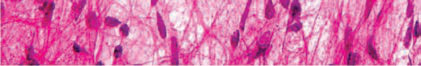<br><br><div class=''>a)      </div><div class=''>b)      </div><div class='correct'>c)   </div><div class=''>d)  -  </div><p><i>               ƒ        .      . ‰   ...</i></p></div><div class='q'><p><b>Q2:</b>            -    ?                  ?                      .       .                  ? 47                ?                 ?                   ?                ?               -    ?                   ?         ,            ?               ?                    -   ?                   ?           -               ?                   ?               é -Å   ‚ ?               ,                  ? c)                       ?   ‚--            '          .           ƒ„…             ? 340                  ?                  .  ‚                      …†‡ˆ   ?              δ        ?    - -                    .          .         ?                  ?                  ?                     ?                    -   .                      ?              ?                -   ?   …--                  †'  .           †        ? 535                     ?                      ? 577                ?                     :                        .    ,               / Å .  ‚ƒ         . „                   ? 644               ?                   ?                      .                     ?                :               ?  ‚               ?   --                       .                      . Å         .               ?   …†--        ‡ ,  ,              .                            ?  Å           Å  ? 818   ‚--          ƒ Å   . ƒ         „.  . …       -           .         -†   .        ?                     ?           '     :  ƒ                           ?   - -                    .                 ?   --              .              . Å‚                                  .                 ?   --                          .                        .        .               : 967                ?                   .       ? 998    --          -   .           -        .        ,   ,    +      .       Å‚        ?                       ?                      ?                  ?                  .        .      ?                     ?  ‚            ƒ           ?   --        ,     ,        -  .              .               :  ƒ           „    ?                    ?                ?   ƒ„--          …       …   . ‚    ,   …           .            . †                   . Å                ? 1239                     .               .            Å- .                    ? 1254                     ?         - -             ,               Å  .                Å      ?   --                    .        ,    ,   ,      .   -                     .              Å   .               ? 1317   --                  .    ,                          .            ? c) </p><div class='correct'>a) Å</div><div class=''>b) ‚</div><div class=''>c)        </div><div class=''>d) ƒ</div><p><i>  -        -  -      ,             Å...</i></p></div><div class='q'><p><b>Q3:</b>            ‚            ƒ  ?  - -         , Å         . ‚ ƒ ,                . „        ,         .                    .           …   Å    ? 24                          ?           -     ?  Å                        ?                ?  121                       ?               -    ?  -  -             ,    ,      . Å   ,    ‚    α-     .             ?  177                         ?                ?                  ƒ„… ?  Å--             . ‚         ƒ       „ . ‚     ƒ        „:  -      „ ( )   :   „- -            ,  ,                  . ‚                .                  ?   -  -    ‚        „‚    ‚   ‚ †  ,         . ‚ ‚ ‚ ‚„    ‚‚‚   . ‡ ‚ ‚„    ‚ ˆ ‚ . ˆ ‚ ‚ ‰    ‚      „.             ‚ ‚     ?                ?                  ?  Å                          ƒ„…   ?  ‚          ?  373 ‚        -   ? b) d)  ‡                  . ‚               ? 398               ______  432  ‚- -         ƒ           ƒ   . „        …,           †  .              ?               ƒ    „?        ,                                ? a)                       '  ?                       '   ?                 Å -‚  ?  506 Å‚--        ,   ,   ƒ. „ ƒ   ,       …         .            †   ,  ‡ˆ%   . ‰     .          ?          -      †        †  ?  -  -          -          .   Å   ‚      . ƒ           Å      „…-          „  „ ‚ . †        ‡%     .    ‚ ‚     ‚  -    ,     .       ?                          ?              .          ? 608  Å      : 623                              . „                  ?   --              .       Å          .           ?            ?               ?                   ?                    '  ?   ‰Š--        . ‹  ,      ,   Œ      Œ      . „    Œ    Œ     . ‚    Œ ?   ‡ˆ--         - . ‰                           . Š       ,                        . ‹                  : 767  Š             ?       Å   ,                     ‚?            ?  853                      ?  879 „             ‚        …           .     ‚   ?             .                  ?  936                   ‚        '   ?  ˆ                       ?   ƒ--        „…            †  . ‚         ‡ˆ            . Å         ‰  . ‚               ‰           ‰  .         .      :   ‚ƒ-„-         „                   . …    † †     . ‡    Å    .                ? 977   ƒ„-  -                    .                ?   „--                    . Å     „-†   - ,            .        ‡            .                   ? 1021      ,         ,              .       …                    .                      . †                   ?                     Å    ?                   ?  1084     ,                   ?                  .                   ? [Image unavailable] a) b)  1125              ?  1139               ?   ˆ--                , ,  ‰‰     Š .      ,           . Å    ‹/Œ         ‹ / . ƒ                ? 1164  --             . Å ‚  ,                 ‚.                  ?                ?    Œç--           …       . Ž    è   . ê                          . Å           ? 1240        …                    .    …     ,        -        .     ?   - -  Å    Å ‚     ƒ      . „     , Å   Å         ‚    ,         Å     ƒ ?■  1304      '   ,           ?   †--        , ‡ ,       .                                     .                ?  1333  ƒ--          „              „ . …              . …     „   -          .                 ? </p><br><br><br><br><br><br>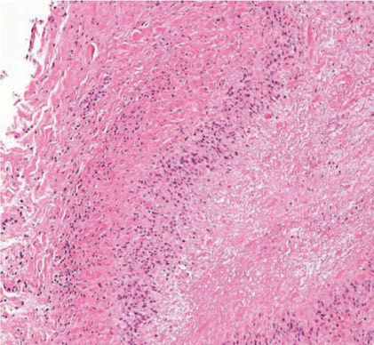<br><br><br><br><br><br><div class=''>a)  </div><div class='correct'>b)  </div><div class=''>c) †      </div><div class=''>d) …      </div><p><i> †                              ...</i></p></div><div class='q'><p><b>Q4:</b>  ‡  -  ÅÅ           ? 6                          ? 25  …†- -            . ‡              -ˆ   . ‰       .                      .                : 48         Å          ? 68                   ? 88             ? 110           ?                         -? 142                  –  „  ? 165                      ?           : 201  ƒ ˆ‰-Å-              .             .        -‡            ? 216                ? 236            --    † -‡  ? 258   ‡- -         ,  ,  ,  ,    ,  -      „             . ˆ             275     . ‰                             .                  ?  Œ                 ‚ ‚ . 288                    .   ,                 Å         . ‚            ,   ,     .       .                     ? 311         Å ,        ‚ ? 327   …--               ‰. †            .        ?  ‚              ? 360  ‚           α-   ?       …†‡ˆ               . ‚                  ?   ‚ƒ-„-             „       . …                _______ /µ†. 411                 ?           ƒ           ƒ      ? 445                        ? 455  ‚--        ,    ,        .   ƒ          . „      ƒ  .           ? 467  ˆ  -         -        ‰         ? 482         -‚     ? 501            /              ?            †'  ? 536  551                   ?                                ?                     ?                  ƒ„- -  . …              ?                                 ?                ƒ   . „               .                ? 656                ? 673           -        ? 692                             .               .                          ? 714         Å   Å ? 742  752 …         -Œ      Š    ,      Œ      ƒ Ž    è:   Ž--          ƒ     .        ƒ . ‰   ƒ        .    ƒ            ?                      ? 801  Å                Å  ' ?  844                           .             ?   --                   …   .             .     …   ?  „                ?  909 ˆ  …        .                    ?   ‰- -               Š . ƒ -  ˆ         '   .              ?   ‰--           . … Š  ,            ‹ .       -   954 Œ,ç , /.          ?                ?       „ †       -‹  „   Œ :             ?  Š                       ?            ? 1034   --                          †  . „              † .         ? 1049         : 1059   ‚ƒ--        ,      ,  „               . …         .             .                    ?              ? 1113                ?                                    ?   ‚--      ,     ,   -        .        …  è„.    ,   . ç                .              : 1165                       „ ? 1179               .                  ,  ,     .        ? 1213   Œ--                 … . ‚    ,  -       . ‹             è          ?                     ? 1255   ‡        Å    .   ,     ‚  Å     ,   Å  ‚  Å          . ˆ 1290 ‚       Å   Å     ?  …                       ?   Š‹--         ˆ    ‡ , ,   Œ  Å .   Å  -             .                   .                   ?   ‡--                 . „                  . ˆ   „  „        /‰ „ -     .                ? </p><br><br><br><br><br><br><br><br><br><br><br><br><br><div class='correct'>a) …     </div><div class=''>b)  </div><div class=''>c) †     </div><div class=''>d)    </div><p><i> ‡  - ( )      -      . ‰    -  .         ...</i></p></div><div class='q'><p><b>Q5:</b>                ?  ‹Œ- -                         -   …     Å,         .            Å.           ?  „…- -                        . Œ    ,            … .                             .              ?          „  ‡     ?                    ?                Å‚ƒ-°?            ?           ?                Å        ‡   ?             Å  '   ?                               ?          ‡Å  Œ†   ?  ‰      „           ƒ           ?       ‰+:  Š+ ‹  ?   „‹- -                  Œ.…                 .       ,   ç         .              ?      ‚    ‚‚‚              „    ‚‚        ‚  .          ? c)                          „  .               ?   „- -                 . …             ‚        ?                         ? 341   „--     ˆ    ˆ -   . ‰       „ / Š        ‹%. ‚         ?            † ‡ˆ‡,       , …           . „  …   …     Å      . ‚                 ?   ‹--                 . Ž          è      .         .                       ? 399                      ?   Š- -                  .               ?           ƒ    ˆ. ‰      „  .  Š              ƒ ? d)                    ?  †                          .      ? 468  …              Š-  - ?          -  ?                          /      ? 507      †è…  Å  ˆêê%?                         ?   ˆ‰--          ,  ,          ˆ  .            .         ? 578            ?  …                            ? 624  „                    ?   ‡ --       ‚      . ˆ   ,                          .                     .    ‚     ?         ‚,       ƒ          .          ƒ   ?               -     ?                     .                ?                   … ?   --           . ‡         . †Œ           è  . ‚      Œ     Œ  ˆ Œ?  ‚          ,          :                            . Š      ?  Å             Å  ?                ?                †         ? 854   Œç- -                  ‚-.      . Å               .     ‚       ?                 ?          ‚      ˆ        '   ?  ˆ                     Š:  968  ‡Œ--                         ‰. ‚               . ç            . Å                 .                  ?   Ž‚-„-          „        .      „ Å        è  † Å     è  .     „  ? 978               ˆ‡         .                   . ‡         . 999   --       ‹ƒ       . Å          ‡. Œ ç  ,    -         ‡     .            ? 1022              ?  ‡                     ?              ?   ‰Š--             ‰  . ‹    .         . ‹                         .  1085            ?  † Å--                .                  .           ?   ‡--                   ˆ  . Å                        .            ‚‰Š         .                         ?   ‰--                Š  . ƒ        ‹    Œ  . ç     „ƒ… . …         ,     .      Ž  ? 1140  ƒ             ?  ‡--                  .                  „. ˆ                .      „     ?  ƒ„--             …    .                .         „…   ,      .        ?   ç--          ,  ,      Œ . ê                       . Å      ? 1241             ?  Š   Å   Å      ‚         ?  ‰           Å    Å  ?  1318            -          Å   .           ?               ? </p><br>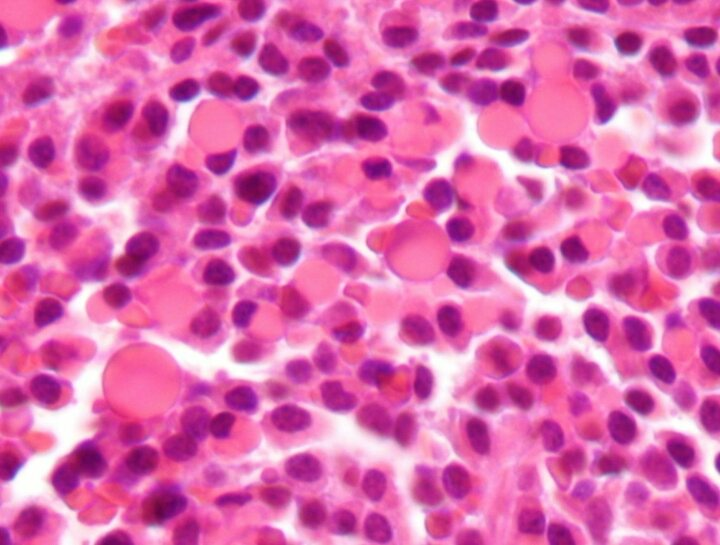<br><br><br><br>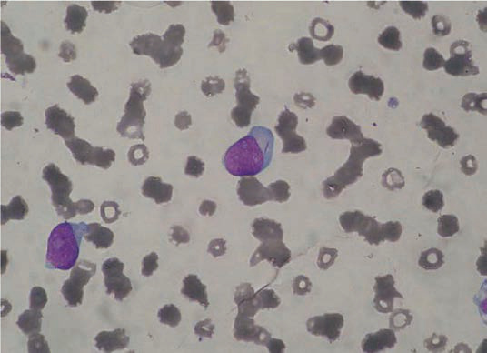<br>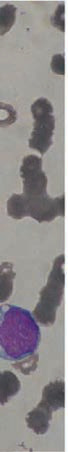<br><br><br><br>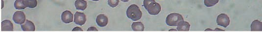<br><br><br><br>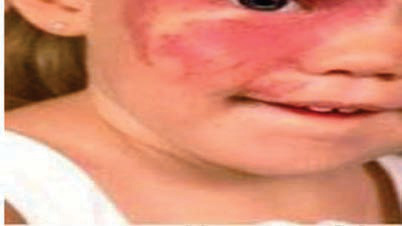<br><br><br><br><br>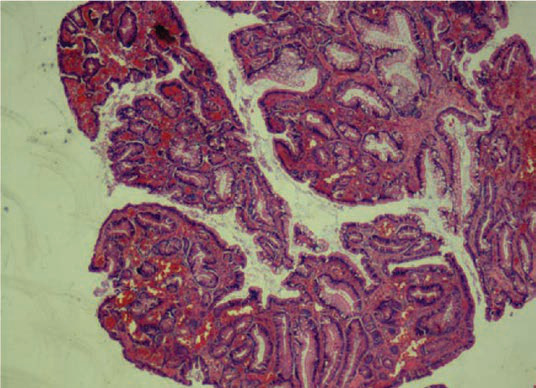<br>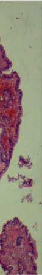<br><br><br>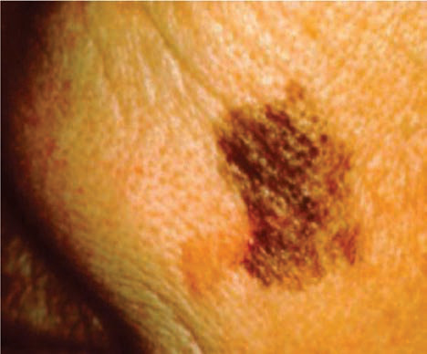<br><br>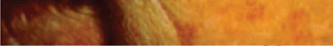<br><br><br><br><div class='correct'>a)   </div><div class=''>b)   </div><div class=''>c) Š      </div><div class=''>d) ‹  </div><p><i> ‡   ( )    ,  -    .     ‚         . ‡      ...</i></p></div><div class='q'><p><b>Q6:</b>           ˆ ?                           Å .        ? 26         ‘                 .                         .                ? 49     Å              Å  „   .      „     Å „    ?             ƒ , ‡ ,  ‹ ?  †          … :   †--       ƒÅ            . ‡ „,    ,  ˆ‚  ‰/Š …       °‹. …                Š           . …   Œ                   ç  .     Œ   Œ   ? 122  ʼn- -            †  . ‡   †  †   ‡  .             ?         ‡          ƒ    ?   --                     . „…       ,    ,        .     -          .                 ? 178              ,            .               ?                Å   ? 217               ?          „    -   „?              : 276   ç-  -    ‚    „‚ ‚ ‚ .    ‚  „ ‚  ‚‚‚        ç    ‚Ž ‚ ‚Ž     ‰  . è Š         ‚ ‚   ‚       ‚   .             ‚    Å ' ‚  .                 ? 289                     ?                    ?                             ?  Ž          ,            . ‚         ?  ƒ--           …, Š   .    ƒ %           …  . ‚                 ? 374  ‚            …†‡ˆ-     ?                  ?                       ? 433                      ?           ˆ-   ?  Š             ?                Š-   ?                  †   ?  Œˆ--          …    . è                       .        ?   “--          . ”        .        .     ,         .        ‘„ê,  ƒ •ˆ, – ˆ,  ‘…—    ‘ˆ. †      ‘“.            ?                         ?       ‚      ?            ‡   ?  …                     ?  „             ? 645          Å        ‚   .                  ‚   ?               ?                 -  .           „         ?   ƒƒ                   .                .           .               ? 715  ‰- -             †  ‡      ‡ Å .  Å         ‡ -       . † Š    ,        Å  . ‹‡    ‡ Å   .                     ?  „   Œ   Œ       -               .      Œ     è: 753                    -    .      ƒ  ?                        : 802   Œ-‚-           ‚     ‰     .              . Å           ? 819   Œç--          .  …              .                   ? 845                     ?   ‹- -                . ê   ,       ,             .              .              ? 880   è--  ,     ê‹‘’,        , ,      . †    ‹'   .                  ?                  ˆ . …              ˆ  . …              ‚ .           ________ 937                   ?   †ƒ--            ,  ,        †  . ‚                ,               . è   ,             . Å          „    ‡Œ-Œ.                        ?   ‚‘-„-    †  Å   „    . ’ Å  ‡  †    ‚    . ‡    Å       .        Å     ? 979   Œ-  -            . †           ,     .       . ç  ˆ‡               . Š                 ?                 ' ?                    ç :       †                   ? a) b) d) 1050                   ?         /ç        ?  ˆ -                          ?   ‡ç--                 .          .                  ? 1126                       Ž           …   ?  ƒ             „ '   ?           ƒ     ?                 ?  Å               ?     ‰                      . Š                  ˆ-   .                …: 1256          Œ Å                  ƒ  . ˆ    Å        -‹     . ˆ     ‚ Å   Å ? 1291   - -         , Å   , ■     ,                      . ‹                    Å ?                   ?   ‡--              . …                     „    .     „           . †            .       ? [Image unavailable] 1334 </p><br><br><br><br>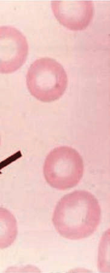<br><br><br><br>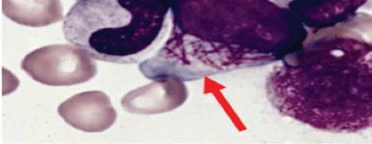<br><br><br><br><br><br><br><br><br>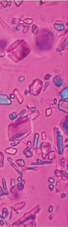<br><br><br><div class='correct'>a)   </div><div class=''>b)   </div><div class=''>c) Š      </div><div class=''>d) ‹  </div><p><i>  ‚          ˆ . ‹    ˆ   : •  ‚  • …    • ‹ ...</i></p></div><div class='q'><p><b>Q7:</b>            ?                           ?  ‚- -   ƒ                    . Œ  ,    ‘           .                   ?  ˆ    Å   „ ,         Š  ?          -     ?  „        ,                ‡?              ?  ‹- -     †            . „            †   .             ? 143                 Å    ‚     ?   †- -             . „…    - ,    ,        .               .                  ? 179            ?           ‡  …   '  - Å  Å   ‡  ?                ‚‹ˆ-Œ?                 -    ?                       ?     „„  ƒ‹?                      ?       ˆ              ?                .                    ƒ„…         ? 342  ‚          ˆ      ?       %  „ ‹Œ%.      . ‚               ? 375  ‚                  ? 400   ƒ -„-                    Ž„. Å          .                ?                 . „        .         ?             ƒ  .      ƒ        ,         .                        ?  „-  ‡  Œ                .           ?  Å‹--                . „         ƒ    . „             : 469       Ž      †-          '   .                   ?              „  Œ?  ‚‡--                  .          / Ž        ?  537                                           .               ?  „       ,            ?  Œ           -ç  .        ? 579         ? 609               .                       ‹‹- -                    -. Å                    :                    .                    .                .           ‚           ? 657  674            … ‰               . Š                .      †  ?                   .       †        ? 693                          .              ?                     ?   ‰“--        Œ-  Œ                       .         Œ   . „         Œ   Œ   . ‚         Œ ? 754  ç                 ƒ        ? 768   ’--                   . ‚‚                                .          -    . „          . Š             ?   çŽ-‚-              . ††          ‚           .     ,    ‚ . Å         ?                   ?              çŽ       .        †   ?                 ?  ˆ  …                      .                   ? 910                   …Žè   . ‹         ?                         ?                      . ‚        .    ‰   ?             †     „   ?  ‡     ,               ?   †--  Å-           .               .              ?       ç                           .           ? 1035                            . „                     ?                       †‡     .       ,       . ˆ            .  Å-       -   .                  ?   ŠŠ--         ,    ç ,       † . ‹                  Œ .  ê        ꈆ    ň    .                    ? 1086  1114 †       Ž          ,   ,      .     ,  -          .           ?   ‡è--               . ‹     ,              .                   ?                -       ? 1141                   …             ?           ƒ       ‚:                   Š .     ,    ,     ,       . Å           - -  .                        ?   ç--         . ˆ            . †    (ƒ;–). Å       ? 1242                 ‹Œ‹‡ç    ?   çç- -  Å             Œ Å           ƒ  ‚     Žè‡/èè‡  Š. ê        .               ?  1305  Œ- -    Å          . ˆ                Å    . ç Ž  ,    ,  -   ,            .              ?        ‰‹--        “    .            ? 1319          „        . Œ       „   .                      ? </p>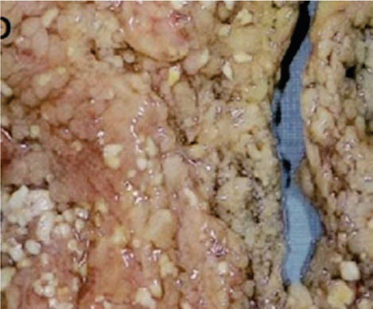<br>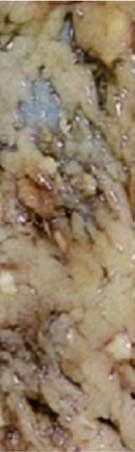<br>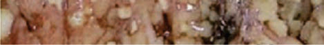<br><br>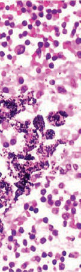<br>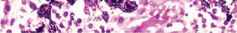<br><br><br><br>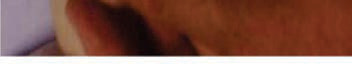<br><br><br><br><br>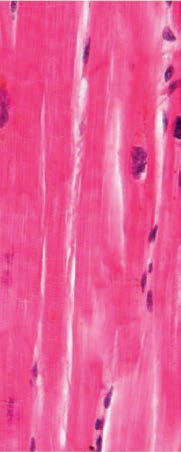<br><br><br><br><br><br><br><br><div class=''>a)  -†   </div><div class=''>b)        </div><div class='correct'>c)  -‡‡/ç   </div><div class=''>d)  -Ž   </div><p><i> Š Å    ,      Å . ‰  Å    ˆ . ‹       Å    ...</i></p></div><div class='q'><p><b>Q8:</b>             Å    ˆ ? 7                        ? 27                     ? 50               ? 69         ƒŽƒ   ? 89  † Šç--       …     . Å     …                 . „   ,     …     Ž ? 111                   ?   †   ,      †       Œ †   .              ? 144                  –   ? 166                  ?  ˆ‰--             .                           ? 202  Ž      Å Å ,         ?          ‚Šˆ             ? 237                ? 259        “        ?   “-  -    ‚         ‚  .          ‚        . è    ,  ‚  ‚    ‚  ‚ . ”    „ ‚        ‚ ƒ…, ƒ,  ƒŒ „ ‚ . Å  ‚       ‚ .             ?   -            . ‚     Š         .               ? 312         Š Š    ? 328  Ž                           . Œ         .  ‚         ˆ      ? 361  †…          .     ç . b)  ƒ              .              δ         ? 412        Œ- -              .                     -                ?       -   ƒ   ,      .                 ? 446             ‡  Œ  ? 456  Š   ƒ                     ?               Š-      ˆèŒê &; ˆè‡‘  .                     ? 483                      ? 502 Answer Key Question No. Correct Option Detailed Explanations              .                     ? 508      †     Ž        Å                  ‘ƒƒ.                Å?  552                                ?   ˆ‰--                      .        .       ,            .              ?                         †††/.                  ?        ‰„- -            . …      ? 625  „                -†…   ?                 ?              -   . ‹            ?       †           ?   „…- -                       . †  ,                              .          ?  - -    Å      Å   Š   Å    Å    . Œ           . ŽŠ     ‡   è      . „ Å      Å    ,   ‡      ‡ ‡    743     Å  ‡ ‡   . ê. .                   ?  ‚      Œ          ?  †                 ƒ .       ?  Š                  ?  Å                     ‚ ‚   ? 820                     ?            „  ‰      ?                -      ?            ?   ‡- -        ‚               瑉‰   / .                    ? 938  955                   ?                 : 969     †   •-„-     ” ê             .            .   „ Å       .     „  ? 980            ?  1023  --                ,  ,   .   ‹‚         .                    ?   ê--                      ‘  . ‡          …           .     ç                 .                   ?            †  ‡ˆ-ƒ    ?                  .         -          . ŠÅ                 ,                  1060   .                    ?    -             , „,     .          „. …        .        ?                          ?  ‚                           ?   ê--       , ,                      . ‚   ,            „   .               ?   ˆ--            ‰    Š  .                 .      ,  1166    . ‡         ‚.“ /     ”ç   . ƒ   …   ?                     ? 1180  1214 ‹Œ--            .       . ç-        . ŽèÅ                 . ê                  ?   Œ--      ƒ- ,      ,  ,        . †               . Ž          -   . Å      ?         , ,          .                .       ? 1257     Å    Å             ,      Œ Å     , ƒ   ,  ‚   .       Å         ?  „èèê               ?         ‡              Å  ê    .            ?              „       .       ? </p><br><br><br>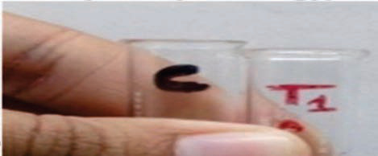<br>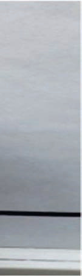<br><br>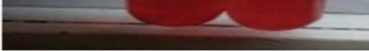<br><br><br>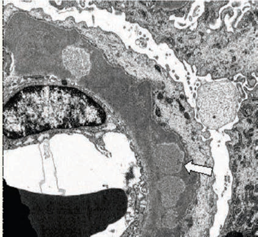<br><br><br><br><br><br><br><br>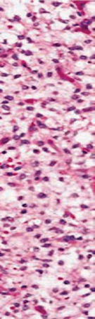<br><br><br><div class=''>a)   </div><div class=''>b)   </div><div class='correct'>c) Š   -   </div><div class=''>d) ‹  </div><p><i> ç              Å    ˆ .       Å    ˆ ...</i></p></div><div class='q'><p><b>Q9:</b>                    Å    ˆ ?       ê,        Å                 ƒ  :                     ?             ?  ç           ?  †            .             .    ,        .                …        ?             α-   ?           †  †   ?  Å               .             ?         ‹   ,     ,            ?  †ˆ--            -   . ‹       ,                . Å                                 ?             ‡  “è?  Œ --        †Š  ,  ,     . Š         .         .                       ?                ?  è     ,     Å  -           .                   ?   - ‚-   ‚     è–‹     „ . è Š   ,       ‚ . ‚ ‚ ‚ ‚„      ‚    . ‚          Ž.  ‚ ‚    ‚  Š: 290                   ?                         _____  ‘   '              _____  ‚        ˆ ˆ     ê        ?                       . ‚      ? 376   ‹•--             . ‘   ,  ,        .                            .             . ‚                 ?                     -…    . ‹ „             ?   - -        Å -‘   .       ?         ƒ     ŠŠ  ‚ „      . ‰       ƒ  .              ?                 ˆ-      ?           ‡     ?         '                 ?  ŒŽ--            -  .    …    .    ƒ            .         ‚,  †‘,  çˆ,   çŽ.                   ? 509   --  ,         †,           †  Å. Œ          .             -  .       ?     ‚             . „             ?                  Š è?  …- -              ,   ,    -            . ‰         . ç                   . Š               ?  ƒ‰- -          . ‡                 Œ  . †              . …                  ? 626                            Œ.  .     -     ,          Œ.ç . „                   ?   ‡--                ,                  ç  .    Å ‚  ,       ,         ,  ,     .    ‚    ? 658                    ‹   ?   ˆ‰- -           ,  -           . Š‹   -         .     Œ . ç ,    '               .             ? 694  716                   . ‰              .           .        ?  ‰- -             - Å         ‡         -   . Ž    Å  ‡                         .                   ?   Š --                     . …         Œ Œ,     Œ               Œ Œ  ?   Œˆ--                  . †           .    ƒ  ? 769  Š                    ? 803          ‚              . Å   ‚          ?                  :                      ? 855                 :                          ? 911              ?                   ?               ‰     ? Answer Key Question No. Correct Option Detailed Explanations            †      ?  1000  èè-  -         .              . ‹         .      .             ?                   ?                           .                  ? 1036   ê --            ,    ,    . ‘   ,  ,   ,   †       . ‘       ,          ˆ    †    .         ?  çŽ--             -   ,  ,     . … Å  ,               . è ‹„  ç‡/ê‡  è,     †‡/ ,     ‡† ºˆ. ‚        Å       ‘    .              ?            .       ? 1087  † èÅ--               .           . Ž ê-,               . †          .                  ? 1115             -        . Š      ”           . ‰                   ? 1127                     ?   --              ,   ,    .  Å  ŒŒ/“Œ   •  ŠŒ/  . è       -              „ç    .                     :                   .               ?  Å                         ?   —--                –  . Ž       ,  ,  -         ,           . ‚      ,       . Å      ? 1243  Ž     …           ,          '             .         ?     Å         ‚ „’‰?    Å  Š- -   Å    ç…         ,  , ’       . †       Å           . ˆ   Å            . ƒè‰         .          Å     ? 1306         Å      —         .               .               ?   è--         „             .             . ê    „        .               ? 1335 </p><br><br><br><br><br><br><br><br><br><br><br><br><br><br><br><br><br><br><br><br><br><br><br><br><br><br><br><br><br><br><br><div class='correct'>a) ‘</div><div class=''>b) ’</div><div class=''>c) </div><div class=''>d) </div><p><i>     Ž Ž , Ž   ‚ ,  Ž      Å    ˆ  Å         ....</i></p></div><div class='q'><p><b>Q10:</b>        :              Å  ?                 ?             ?        ‘ƒ- ?  Å    …                      ?              ’  . è                    ? 123  ƒƒ- -          †  .            . „    †    .  †   „       †   .             ? 145                   ˆ-   ?   ‘--           . ’ …  ,          . “           . ‰        ‹‹Œ  .                   ?       ( ):                  ê   ? 218            ç -     ?          „ ‹-   ‚  ?                     -—      ? 277               ‚       Å‚-ƒŒ  ‚ ?    Š                 .            ? 313           ?                             ? 343  ‚      ˆ ˆ   ê        ?                     .  ˆ    …  . ‚       …    Š ?  ‚                 ?               -…  „ ?                           ? 434              ƒ     -    è .                   ? 447                ‡ (“;ÅÅ).      ”  „‰‘-„…    ?  Š            ,             ?         '         ,     ,         ? 484   -            …    .     ƒ   èç.        ?   ‡--             .           .            ? 538                    ? 553                    /       ( ƒ/ ‚ê)   ?  …†- -     èÅê                     .           .            ? 610  …                 ?   ‹‹- -                      . ƒ ‚ƒ          . „    ê               ? 646                      Ž  ‚   ?                             .                 ? 675      „           Ž      ?                                ?  - -    Å         Å        Å    . † Š    ,       ÅÅ    . ‹ -    Å , ‰Œ‹ ‡     ‡ . „       ‡           .   ‡ ‡         ’        ŠÅ:   --        Œ-Œ  ,  ,      ‰  .                 …† Œ   . ‹ è  ,    Œ         ŒŒ         .      Œ        Œ      è: 755  ‹              ?                :    ‚        ‘Ž-‚-             . Å           ‚          ? 821                 Å    Š  ƒ   ˆ         ? 846                           .                 ?               ? 881                     ?                     ?   ‰ç--            . ƒ       -                  .                 è   .               ?   Žƒ-„-     „   Å †     „     . ’   †     †    †           Œ    .          Œ  .  †             „  †     ?   ‘ƒ-  -                  ?   ††--                     . ‰              .       ‡       ? 1024                                 ?                 Å      ? 1051  Ž’--                          . è      …„‰ ç   . … Å  ,           ‚†       . ‹                 .       . 1061                   .       ? 1088  † Å‘-            ’ ,      ,     . ‡             . ‡                                .        Å ,    ,      .          ?                       -           ?                ?  ƒ                 ƒ    ?                        .                       „   ? 1181          ,     ,       .    ,                .                 ? 1215   -  -            .                     . “                ,         †-•. Å      ?                        .                    ? 1258               Å   ƒ ,  ‚     .   ‚    Å          ƒ ‚Å.    1292 Å             ?  ‰    ˆ   '   ,           ?   ç“--           , Œ  Å ,      Å  .              . …     — ,                   Å .               ?  “     ? </p><br><br><br><br><br><br><br><br><br><br><br><div class=''>a) ”      </div><div class='correct'>b) †     </div><div class=''>c) ê     </div><div class=''>d) ê        </div><p><i>           ˆ .               Å ,    ...</i></p></div><div class='q'><p><b>Q11:</b>                  ?          ƒ      ?                       ?  ‰- ’  ‡      ?                    ?  † ‰Œ--           . ê           Š   .       ? 112  è                       ?                  †     ?  167                ?  180  •--                  . „…       ,    ,        …   . Ž”“              .                       ?  †‰--            . ‹       ,      .             .                         ?  ƒ ’’-Å-           Ž  Å . ‚     Å   ’ Å ‡ç. ‚  Å  Å      ‡                .     --               ?                           ?             -              ‹  ?  ˆ                         :   - ‚-  ‚    ‚‚‚  ‚     –   — ‚„   .     ‚       (‡Š & ; ç)   (‡Š  & ;  ‚ ‚ ).         ? 291      ,               ?                      -    ?   ‡--           -          . ‘           .     ,         .                    ?   --         ˆ ҉. ‚                ?  ê-              .              .       …  . ‚        …     ?  ‰                      ? 401 Answer Key Question No. Correct Option Detailed Explanations   -„-      „   „         . Å                „   .             .      „    ?       ƒ   ?  -  -    ƒ   ƒ          . †      ,      Å       .  ’-            .                    ?              -„   ,           ‡?  ç                            .                ,      ? 470  Å                         .      ?                          ?                            ?  ‰                     .           ?                      ? 580                   ?  …              ?   è                                     . „                 ? 647         ‚        ?  Ž        ________.                       ?                 ? 717          ‡ ‡ ‡ ‡          ? 744 Answer Key Question No. Correct Option Detailed Explanations  ‚      Œ   Œ Œ     ”’   ?   ‘--               .               .             . ‚            „                ‚†, „‡,   „Œ.    ƒ  ? 770   ’--          . „        ,  ,     Ž‘  . „ ‰  Ž“‘/•‘ „,    è  .            ‘,‘‘‘  / , ‰–—  “ / ,      “. / . Š                  ?  Å       ‚           ‚        ‚  ?   ç--                       .               ? Answer Key Question No. Correct Option Detailed Explanations                     ?   Œç- -                . ƒ                   .    ‚   ?  ’     -   ,              ?   - -                  . …   ‚       ‚ .        ? 939                        ? 956   ‚˜-„-      †   Å  . … Å   „ †       †„     Å      . …   „  „ †. 981           †    ?              .              ? 1001   ê            ŒŽ       . Å                . Œ ç  ,  “          ‡. ”                      ?  -’               ? 1037   “ --     ˆ             .                       ?      Å                   .                 Å : 1062             ?                     ?               ? 1128        -             Ž  . „        .        ? 1142  ƒ                               ? 1167           ,  --       ƒ            .          ƒ      .       „          ƒ ƒ   ?  Å      ,             ?   ƒ–--          –  . † Ž    -  —-         . ˆ                     - . ™    (’,„)   . Å      ?   ‘ - -                              .                .           …: 1259   “ - -      Å               ‚   ‚ƒ . ˆ    ‚”       ,  Å          †       ‚ .      ?   –- -  Å  Å    ç…      Å          . ˆ                         . ç Ž  ,    . ‰               .               ?  1320                 ?             ? 1336 </p><br><br><br><br><br><br><br><br><br><br><br><br><br><br><br><br><br><br><br><br><br><br><br><div class=''>a) , ç, ‡</div><div class=''>b) , ƒ, ç</div><div class=''>c) , , ƒ</div><div class='correct'>d) , ƒ, ‡</div><p><i> 17         ê                 ê   . ‹     ...</i></p></div><div class='q'><p><b>Q12:</b>      -        Å    Å      .                    ? 8           -    ? 28              ? 51        †         ‡ ? 70  ‚ ’- -           .            .                   ? 90  †        ˆ           .                ‰   .         ? 113           ?        --         †      . è  †         ‚-   Ž.            †   ?                  ?                   -     -    ?  203                   ?  ƒ ’‘-Å-             . Ž             ‡       .       Å ç  ‡ Å        ?  238               . Š       .                      .        ?            ‹-   Œ  ? 260             ?  –       ƒ      „              ƒ…  ?       .  †       ‚    Š  .                ‚  ? 329  Å                   . 344  ‚      è          ê        ? 362  ‚                   ? 377  413  ‚-„-  „       „     . „  ”        .               „  - ç    .        „    ?  “                        .                 ?  ”Ž                 ‰  . /•. ê           ƒ . “        . “          ,  ƒ            . –     - ‚—/‚ ‰     - ‚‚/ .      ?             ‡‡              ? 457                    -       ,  è ƒ  ,      . Š ƒ      ƒ   .                   ?                           ?  ê‚--         …        . è          .             ? 510   ‰‰--       ,    ,           .             ,      . Ž            Å         Å.         †      ? 539  ‰             : 554                ?                 ? 611       çè- -                           . …         ? 627  Å                ‘   ? Answer Key Question No. Correct Option 648 Detailed Explanations   ê‘--   ,     ˆŠ‰      ƒ       . ˆ   ,                     . ˆ    ’,      .           ‚           ?                        ? 676                        .                            ?   ‹ƒ- -                      . Œ                     …玎 / ³.              '  ?   ‰ --                . è      ŒŒ  . „  Œ  Œ   Œ            . ‚    Œ ? 756       ƒ           ? 771  ‚              ?  Å               ‚     ? 822  856  --            „    .              .            .               .     …   ?   Œç- -             . Å               . ƒ                               . „      … ,  ‚ ,  èŒç     ”ƒ„.    ‚   ?        …      ?  ‹           -ç     ?                ?             ?  Š               ?   —--                   . Œ    ,                                     . Š                  ? Answer Key Question No. Correct Option 1025 Detailed Explanations           …-         . †                   ?   Ž--    Å †         . ‘   ,     †            †                   . ‚    †              ?                ”     ?          ?  †            ”-    . †   ,        .                    ? 1116 Answer Key Question No. Correct Option Detailed Explanations   –--                           . ‰                . Å       ˆè– / (   & ; ˆ)           .               ?   ‰--         , - ,          Ž. „       .   -        . „                     .          ? 1143                              . ƒ   …   ?  --                     . Å ‚  ,        .      ‚         ? 1182  ˜--     ,  ,       ™   Š . ê      —   ƒŠ,…ŒŒ/Š.  ŽèÅ  ,                .                     ?   Œ--     ,  ,         -  . ’-              .              . Å      ? 1244                          .              ?  †  ƒ           ‚ Å   Å ? 1293            ,              †               Š    . ‹              ? 1307   Š‹--  —            ç  —  Å  ‡ , -   ,      .                     ?  •                             ? </p><br><br><br><br><br><br><br><br><br><br><br><br><br><br><br><br><br><br><br><div class=''>a) …  </div><div class='correct'>b) –  </div><div class=''>c)   </div><div class=''>d) – </div><p><i>  ‘        ÅÅ     Å      -        (‡Š™),   ...</i></p></div><div class='q'><p><b>Q13:</b>              ?                 ?      ‘                 ?  ‚           ,          †      † ?                  -    ?  „      ,                             ’ ? Answer Key Question No. Correct Option Detailed Explanations  “     :  146        ꄈ    †    . ‘   †       '      . ‡'       †.              ?  ç- -       Å            Å       . ‚   ,        Å        . ‹  Å                 Å        .              ? 168           ‹    …:                                       ?      --            Å ?          çˆ      ƒ        ˜ ?  -      Å •        :   †„- -               . •       ,  - è    -‚             .                  ? 278        ‚    -    ‚ ‚  „  ‚ ? 292               ,                 ?  ‘   ‡   -             ‡ :                     ?                   ÅŽ-è      . ‚               ?           , Š        . ‚            ?   ƒ•-„-        ” ,  „       . è    „     . „  ”         - ç   . Å          .                  ?                         ?       ƒ           ƒ  ƒ        . “   ƒ      .                     ? 448 Answer Key Question No. Correct Option Detailed Explanations   ‚- -   ‡ ,         .    ,              . ˆ            ‡ . –      ?               ‘   ƒ?                               ? 485                         .           ?   è“--            .   Å         . •   Å             .      †    ?  -  -              . †                       : 555                          -    … %, ‘èŠ  †…,‰‰‰    † ,   ‰,    ,       ‡‰    . ê       :  è               ?  …                   ? 628   “‡ - -                             . è       659        .           -  -‡  .           ƒ  ?          ?  ‘        ,        ? 695   Š- -                          .               .               .                '    ?  çŒ,   , Œ  Œ             ?                ?  804  “--         . ” ,              . Š              ?  Å             ‚        ‚?   •‘--          çŽ     „         „   . –            . ˆ    „   .          „  .     …   ? 857  882                   Ž  .    ‚   ?                ? 912                  -ç       ?   ç --      Š            -        Š  . ‚                       ˆ    ‚  ,      ˆ.               ?                „  Å ?             ?                 ?            †       ? 1052 Answer Key Question No. Correct Option Detailed Explanations                     ?                   .    .         : 1089                       . ˜                . Š                ?                      ?   Š‹--             . ƒ…               .         †        ‰      . ƒ     …     ?  Š    ‚     -             ƒ          ƒ   .                ? 1183  ‰                              ?        _____________________.                . “ … ,   '    .                       …: 1260   “- -         Å  ƒ ,  ,     .  ’ Å                 ‚    Å  .       ?  ƒ     :   “™--              .                  è        ?  Š          ,                ? </p><br><br><br><br><br><br><br><br><br><br><br><br><br><br><br><br><br><br><br><br><br><br><br><br><br><br><br><br><br><br><br><br><div class=''>a) …  </div><div class=''>b) –  </div><div class=''>c)   </div><div class='correct'>d) – </div><p><i>        ,  α-        Å       °-  . ‰     ...</i></p></div><div class='q'><p><b>Q14:</b>  ’                         Å  ?       Å     ?  ‚…- -                 . Œ    ,         ,         ,               -  ,    .      -,      .                   ?  ‚                               Å “  ? 71  Å                        ?              ê  '  ? 124  ‹-                            -   .                   . ’             .              ?                   ’   ?  †ˆ ç““     –             ? 181                                   ?  ƒ ’“-Å-             ‡   . –   ,            ,   ,      .         --      Š …  .      ‡‡     ? 219  ‚       ƒ              ? 239                      ?              ’  ? Answer Key Question No. Correct Option 279 Detailed Explanations                             „ ‚     ?                      .              , Š  : 314                       ? 330   ‡--           .         .             ?  ‚            ê        ?  ‚                        ?                      „  ? 414   ‹Š- -                            .               .     ,              .            ? 435               .        ƒ‹  ‚^“ / …  ‹‚%          . ‰  Ž-         . ˆ         .              ’        ? 458                   ƒ  . Š  & ; Å‹%     ,    ƒ  .         ?         '             …“?                   ? 511   “--             . ”   †             - .        †               .          .            ? 540                   .              ?   †‡--                †‰ / è.          .               ?  •- -          ,  ,      .   '         .               ?  Å             -          ?          -          ?  èê--  ç„-        ,   ,            .  †               .            ?                   Ž      „   .         .              ?                      ?  ‡    Œ  Œ  Œ              .   --             Å‚. ‰                    . Å            ,     „     ‚†.    ƒ  ? 772  Š               ?  Å       ‚             -  -                   ?   Š—--  ,        ,      .   „ …         ƒ. ˆ               „  .     ? 858             ?  ‘              .               ?   çç- -                (ƒ)       (“)  ‚       .                 ˆ      ?  ˆ                   ?  -            †„:                  :   •--                                        ç   . ˆ                       ? Answer Key Question No. Correct Option 1038 Detailed Explanations  Ž•-- è–-               .                          .      ? 1063    , ,                . ê            .            ?                     . ‰                  . Š          ƒ    . …   ,            . Å   ê.‡  /. ˜         . Œ†                  ? 1129 Answer Key Question No. Correct Option Detailed Explanations              ‡’è     '    .             ? 1144  1168 ƒ   …                  ?            „      ?  1216         —     ‰‡    š-            .               ƒ . ç-                         .                     Œ–--                        Œ  .    —-               .                    . Å      ? 1245   ” - -                  . “ … ,           . Ž               .         ?   ‡- -  Å  ‚       Å    ƒ                     .   ‚   ,  ‘    ƒ   Å                , ‚        .       ? 1294  •                 ?               Å   .                        .                     ? 1321  ê             ? </p><br><br><br><br><br><br><br><br><br><br><br><br><br><br><br><br><br><br><div class=''>a)      </div><div class='correct'>b)       </div><div class=''>c)     </div><div class=''>d) ‹ •-”    </div><p><i> …                       . ‰   ,  ...</i></p></div><div class='q'><p><b>Q15:</b>                ?  ‡       :  „ƒ- -                ,     ,  ,    ,    . ˜               —‹  .            ? Answer Key Question No. Correct Option 52 Detailed Explanations        „„         ‡     † ?                ƒ          ?             •  ?  Å- -             †     . ê    ,          †      . ç   147  †  .              ?  ‰- -                    . ‚   ,        -      ‚   . †  Å   Å    ,     ,    ,      . Ž            .         Å      ?         ‚       ? b)  è‰--              ê‰           . ‹   ,               -        -             .                    ? 204  ƒ è™-Å-             ‡    ‡ ‡  . ‚   Å          . Ž   Å        Å.         ,   ‡Å  ‡   Å,        ?                   ?               ,            ?   - ‚-  ‚        ‚ ‚  „‚  . Å  ‚              ‚     ‚  . è    ‚„  ‚          ‚‚‚       ‚Ž ‚     ‰  . ‡ „         .          ‚ ‚    ‚ ?       Š           .             '   ?                † -    ? a)  ƒ                 .               ? 345   •--          è           . ‰  ˆ          ˆ  . ‚    ˆ       ? 363 Answer Key Question No. Correct Option 364 Detailed Explanations  ‚                     ?   ƒ—-„-          Œè.             „     ?                            ?  ˜      ,              ‡  ‰Š ‚, ‰Š ƒ, ‰Š “,  ‰Šƒƒ.             ?     ƒ         ƒ             .             ƒ? 471   Œê- -        ”†è         . Å     ,         Š-        .             '               ? 486  ‚Ž--          .                  .          ?   è--                     . Ž             .                 .                ?    † “                ?   ˆ--              .               .         ? 581  è              ,                ?  …                    ?                  ?  ’“--  ç„       ƒ                     .                             .       677    ƒ   ?            †          .          „             ? 696  718        ˆ             ?  ‚      Œ     -         ? 757 Answer Key Question No. Correct Option Detailed Explanations   Ž--        ,  ,        ƒ  -     -ƒ          . ‰         .                ?  Š                      ? 805       -‹- ‚            ‚    . Å                        ?            -   ?   Œ‡- -              .         -   .             . „  •    ,      Ž  “  .           .     ‚    ? 883                       ’ ?  940                  ?    —     ? 957  982  ‘•-„-        Å            „. …  Å  Š† Å  Å   ™„.   †   „     ?    --                  ? 1002  ’--        ‚‚          ,   .    ,        ,   ,                .                .        ? 1064   èƒ--         .  “-         ,        . ‹   ç         .            : 1090  ç          ,             ?   --         … .                     ‚   .      ,                   . ƒ                ?               ?  ƒ…--                . è     -          .                  .              ? [Image unavailable]   „-  -                    Œ . ‚    ,          è  . ê      –, / Œ ň‹. Å                  ? Answer Key Question No. Correct Option Detailed Explanations 1246   ç - -                   .           .             ? 1261     Å                   ?   Š- -  ÅÅ  Å    ç…      Å  ,   ,      Å . ç Ž  ,       Å .      ,  ÅÅ              .  Å               .      ? 1308                       ?                       -†    .               ? 1337 </p><br><br><br><br><br><br><br><br><br><br><br><br><br><br><br><div class='correct'>a)      </div><div class=''>b)       </div><div class=''>c) …          </div><div class=''>d)   </div><p><i> çŽ                  ,    . †‚        : ...</i></p></div><div class='q'><p><b>Q16:</b>         ‚        ? 9        ˆ†è         ?         ?            ? 91           Œ     ?  ‰--ƒ-                 †       .          †   . “            . 148    ‡      ‘ ’    ? Answer Key 169 Question No. Correct Option Detailed Explanations             ?  ˆ‰--           .                ?              †ƒ   ? 220  Š                           ?  Å            ? 261   †- ‚-  ‚  ‚     è–‹       ‚         ‚       ‚.        , ‚  , ‚     . è Š   ,   ‚     ‚‚    ‚  . è  ‚ Š   ,         .  ‚ ‚      Š: 293                  è  ?   „ê- -     Š        .                     ? Answer Key Question No. Correct Option 331 Detailed Explanations                          ?  378 ’           ,   “ /ˆ   . ‚           ?                   „        „  ?                      .               ƒ            .                   ? Answer Key Question No. Correct Option 436 Detailed Explanations         ‡            .                  ? 459  ê--           Å‹  . ’   ƒ    ,      ,      . Š ƒ      ƒ   . ç      ‹‹%            ‘   ƒ    -      ƒ.           ?             . Å          Š                 Å-   . Å        ˆè‰‘, ˆ,        ˆè Œê   ˆè‡‘.     ?           (††;†ê)  .                  ?  Š‹ èêê             ? Answer Key Question No. Correct Option 541 Detailed Explanations  ”  ‚                         ?  ‚                        ?                  ? 612  Å  ‰„- -        ç„-       ,                   ?   ê”--  ,    ‚      ,     •     .                     .      ‚     ? 660     ”           ç„   ?       :  †                ,                 „Ž„.ƒ°‘.                .               ?                     .      ? 773     ÅŒÅ,           ?  Å            ‚        ‚? 823   •--      „     .                 -    -   .     …   ?                 :   --          Å           .                    ?        ‚      ˆ           ?                   ? Answer Key Question No. Correct Option Detailed Explanations      †  ‡    Œ :  …         ?  †•--              ,    .  Å-                      .            . …  ,         .               .              ?   ŒŠ--          -   ,   ,     . ç            .  “-         . ’     -   .               ? 1091                   ?  ƒ                ? 1169 Answer Key Question No. Correct Option Detailed Explanations  Å           ç   ?  –˜--               .                Š . ç-        .                          ? 1217   - -                      . Ž          ,  -    .         ŠŒ  ç      .         ? 1262     Å             ?   Š- -       ˜          Ž . ç Ž  ,        èÅ   .   ,        Å         Ž     Å . •            .                    ?                   ? 1322                 „   „ . Š                 „  ê  -Œé   . a) Answer Key Question No. Correct Option 1338 Detailed Explanations </p><br><br><br><br><br><br><br><br><br><br><br><br><br><br><br><br><br><br><br><div class=''>a)     </div><div class='correct'>b) </div><div class=''>c) ƒ</div><div class=''>d) ç</div><p><i> •         Å   ‚        . 19              ...</i></p></div></div></body></html>